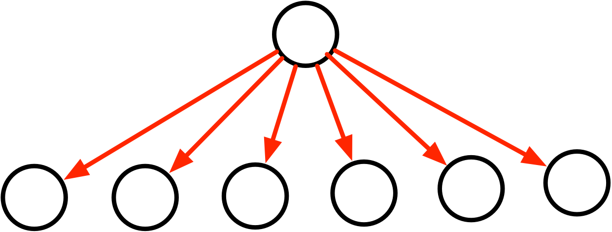

结构型模式示意图
| 设计模式名称 | 示意 | |
| 适配器模式 |  |
|
| 桥接模式 |  |
|
| 组合模式 |  |
|
| 装饰模式 |  |
|
| 外观模式 |  |
行为型模式
| 设计模式名称 | 简要说明 | 速记关键字 |
| 职责链模式 | 通过给多个对象处理请求的机会，减少请求的发送者与接收者之间的耦合。将接收对象链接起来，在链中传递请求，直到有一个对象处理这个请求 | 传递职责 |
| 命令模式 | 将一个请求封装为一个对象，从而可以用不同的请求对客户进行参数化，将请求排队或记录请求日志，支持可撤销的操作 | 日志记录，可撤销 |
| 解释器模式 | 给定一种语言，定义它的文法表示，并定义一个解释器，该解释器用来根据文法表示来解释语言中的句子 | |
| 迭代器模式 | 提供一种方法来顺序访问一个聚合对象中的各个元素，而不需要暴露该对象的内部表示 | |
| 中介者模式 | 用一个中介对象来封装一系列的对象交互，它使各对象不需要显式相互调用，从而达到低耦合，还可以独立地改变对象间的交互 | 不直接引用 |
| 设计模式名称 | 简要说明 | 速记关键字 |
| 备忘录模式 | 在不破坏封装性的前提下，捕获一个对象的内部状态，并在该对象之外保存这个状态，从而可以在以后将该对象恢复到原先保存的状态 | |
| 观察者模式 | 定义对象间的一种一对多的依赖关系，当一个对象的状态发生改变时，所有依赖于它的对象都得到通知并且自动更新（例如单元格计算） | |
| 状态模式 | 允许一个对象在其内部状态改变时改变它的行为 | 状态变成类 |
| 策略模式 | 定义一系列算法，把它们一个个封装起来，并且使他们之间可互相替换，从而让算法可以独立于使用它的用户而变化 | 多方案切换 |
| 模板方法模式 | 定义一个操作中的算法骨架，而将一些步骤延迟到子类中，使得子类可以不改变一个算法的结构即可重新定义算法的某些特定步骤 | |
| 访问者模式 | 表示一个作用于某对象结构中的各个元素操作，使得在不改变各元素的类的前提下定义作用于这些元素的新操作 |
行为型模式示意图
| 设计模式名称 | 示意 |
| 职责链模式 | 
|
| 迭代器模式 |  |
| 中介者模式 |  |
| 观察者模式 |  |